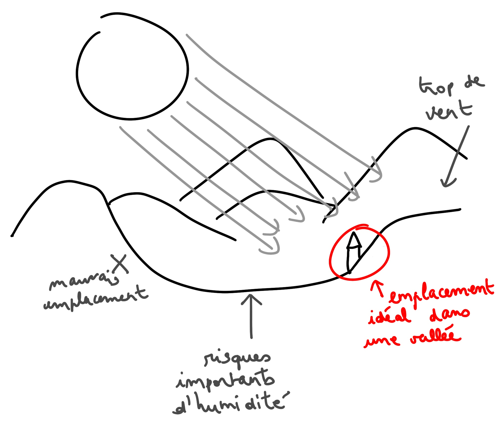
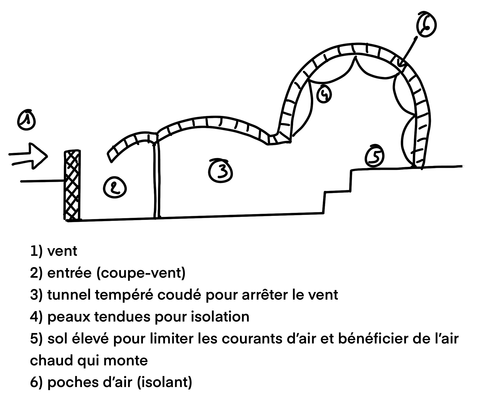
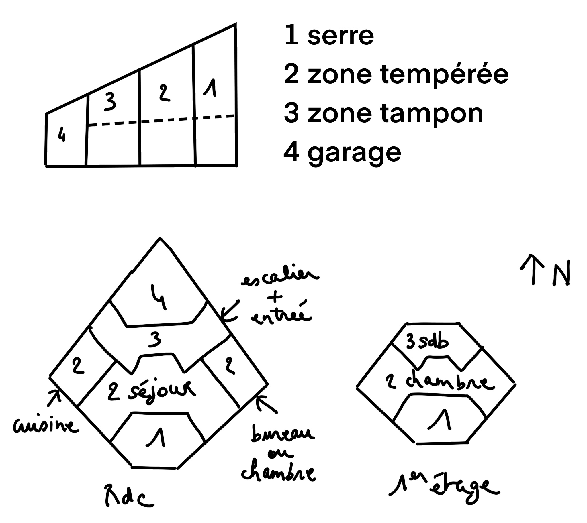
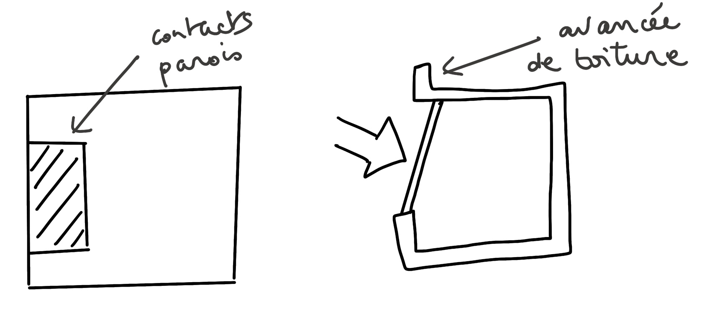
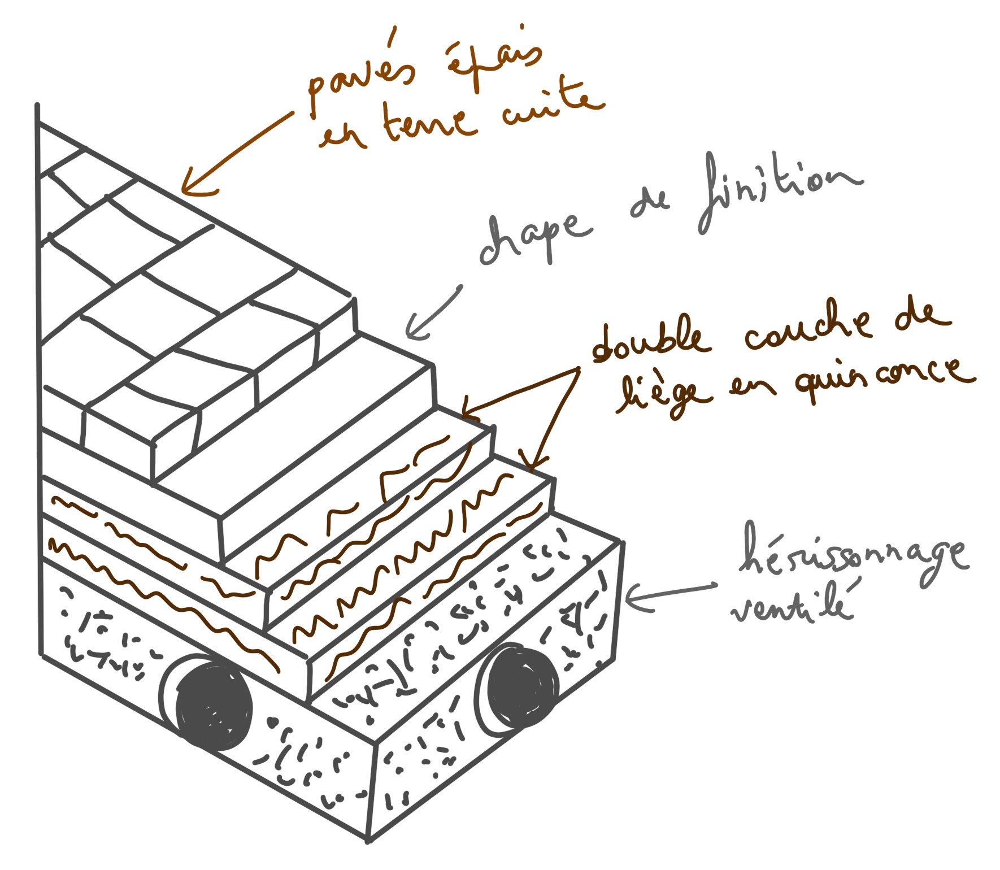
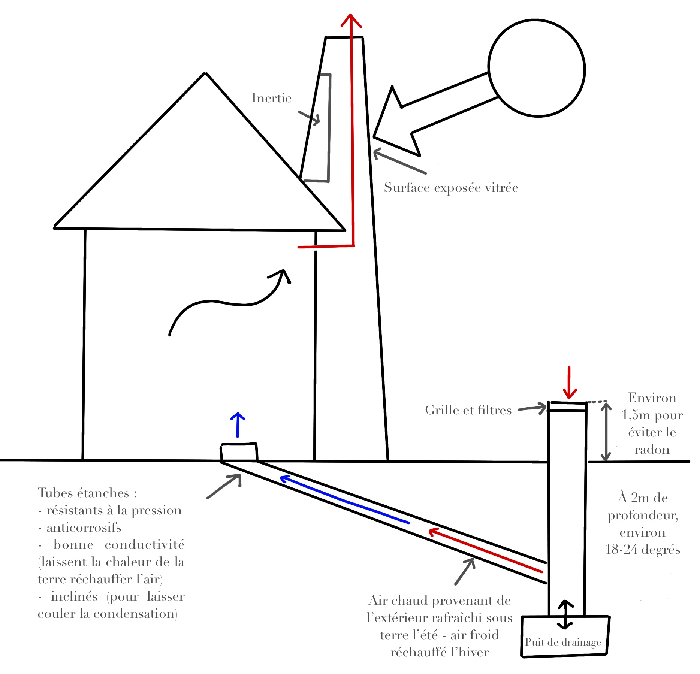

La construction bioclimatique de Samuel Courgey et Jean-Pierre Oliva
Pour avoir une meilleure idée sur les constructions à Samare, j’ai parcouru le manuel La construction bioclimatique de Samuel Courgey et Jean-Pierre Oliva, paru aux éditions Terre Vivante en 2006.
Je vais réunir les notes (beaucoup sous forme de listes) afin d’y voir plus clair pour élaborer les plans des bâtiments samarins.
Architecture bioclimatique
Tout d’abord, l’architecture bioclimatique entend répondre à plusieurs critères générant un équilibre de l’habitat. Équilibre entre les besoins des habitants, le lieu choisi (exposition, vents, etc.), la forme architecturale, les matériaux (de proximité, avec fonctions structurelles et protectrices tout en réduisant les besoins énergétiques) et les énergies nécessaires.
Des habitats groupés peuvent permettre une réduction importante des coûts et des besoins énergétiques.
Ce type d’architecture doit permettre de :
- vivre avec les rythmes naturels ;
- créer du lien avec le temps (celui qui passe, mais aussi la météo) ;
- créer du lien avec l’espace ;
- créer du lien avec autrui.
L’habitant est acteur au sein de la maison. Il doit comprendre les rythmes et les intégrer à ses habitudes pour permettre des performances optimales de l’habitat.
L’emplacement
Critères
Il est primordial d’établir le plan de la construction en fonction du lieu d’implantation. Il convient de faire attention aux critères suivants :
- l’orientation du terrain, l’exposition (sud) ;
- l’amplitude des températures de l’air (canicule, nuits fraîches en été, gelées tardives, etc.) ;
- le régime des vents (secteurs et vitesse) ;
- l’humidité de l’air (la présence de végétation favorise l’humidité de l’air et donc, le rafraîchissement) ;
- l’altitude.
Focus sur l’altitude
Plus l’altitude est élevée :
- plus les températures sont basses ;
- plus les variations de température jour/nuit sont importantes ;
- plus il y a de vent.
Stratégies thermiques
Pour s’adapter aux variations de climat extérieur, les humains adoptent différentes stratégies (biologiques ou externes) :
- régulation métabolique (variation des quantités de sang près de la peau) ;
- modification de l’activité musculaire (s’activer pour se réchauffer et se reposer pour se rafraîchir) ;
- nomadisme (d’un climat à l’autre ou au sein même de l’habitat) ;
- construction d’un abri, d’un habitat (compact, pour limiter l’exposition et créer un microclimat) ;
- mise en commun de chaleurs corporelles (juxtaposition des abris pour animaux à l’habitat, avec circuit d’eau chauffé en circulant dans l’étable) ;
- port de vêtements (collés au corps pour emprisonner la chaleur ou amples pour faire circuler l’air).
Confort thermique
Généralités
La température idéale dans les pièces d’un habitat se situe en moyenne entre 16 et 19°C, si les parois de la maison gardent une sensation de chaleur. Les chambres doivent être plus fraîches pour un meilleur confort.
Certains facteurs permettent de maintenir ces températures, été comme hiver :
- architecture particulière (Cf. exemple de l’igloo, de l’earthship ou de la maison en gradins) ;
- géothermie (eau thermale canalisée et circulant sous les planchers) ;
- poêle de masse (chaleur absorbée par la masse des murs avec restitution déphasée – décalée dans le temps) ;
- nomadisme intérieur (en fonction de l’exposition du Soleil, des moments de la journée) ;
- aménagements spécifiques (occultations solaires et ventilation nocturne ; treilles végétalisées en façade sud pour ombrage, humidifier l’air et rafraîchir par évapotranspiration des plantes ; grandes parois en maçonnerie lourde pour inertie thermique ; puits canadien pour créer une ventilation naturelle ; pour les pays très chaud, double paroi de la façade sud pour évacuer l’air réchauffé) ;
- conception spatiale adaptée (exposition, superficie, usage) ;
- participation active des habitants (ouverture et fermeture des volets et des baies entre la serre et l’habitat).
Exemples
Igloo
La neige renforce la structure de l’igloo et l’isolation. Une fine couche de glace, à l’intérieur et à l’extérieur, permet de boucher les aspérités et de réfléchir la chaleur.
Earthship
Les murs nord, est et ouest sont en pneus remplis et recouverts de terre, si bien qu’on ne voit que la façade sud, en verre. L’habitat est sous la colline. La toiture est végétalisée.
La maximisation des apports solaires au sud dépend du climat, mais de manière générale, il faut privilégier les ouvertures au sud, rester modéré à l’est et à l’ouest, ainsi que sur la toiture, mais surtout n’en apporter aucune au nord. Tout enterrer est plus judicieux. Et plus le climat est rude, plus la volumétrie de l’habitat doit être compacte, pour tout type d’habitat.
Il convient de porter un soin particulier au choix des matériaux.
Maison en gradins
Le principe est assez similaire à celui du earthship. La maison est enterrée à flanc de colline, la façade sud est vitrée avec des brises-soleil amovibles. Le tout est découpé en gradins (parois inclinées pour être exposées au rayonnement solaire, escaliers intérieurs).
Les parois
Les parois doivent être pensées et conçues pour le confort d’été ET le confort d’hiver.
En saison froide, les parois ont pour rôle de :
- capter les calories solaires (attention aux ombres portées de végétaux et autres bâtiments sur les façades sud) ;
- les stocker ;
- les conserver le plus longtemps possible et limiter les pertes ;
- aider à une distribution efficace de l’ensemble de ces calories dans l’habitat.
En saison chaude, les parois doivent permettre de :
- protéger du rayonnement solaire ;
- éviter la pénétration des calories solaires ;
- dissiper les calories excédentaires.
Pour les mi-saisons, on recherche :
- la suffisance énergétique ;
- le confort naturel sans apport de chauffage ;
- un mix des performances été et hiver.
Inertie des parois
Les parois doivent avoir une inertie forte pour disposer d’une réserve de chaleur à diffuser durant les heures sans soleil, ou encore pour éviter les surchauffes aux heures ensoleillées (à condition d’y associer des protections solaires et un système de rafraîchissement nocturne).
Si l’occupation du bâtiment est intermittente, il peut être préférable d’avoir des parois à inertie faible, sinon la restitution des calories se ferait quand le bâtiment est vide.
Pour amortir l’onde thermique en saison chaude et étaler les apports solaires sur plusieurs jours sans ensoleillement en saison froide (environ 12 jours), il faut des parois lourdes au plancher, au plafond et pour toutes les parois verticales (même les cloisons intérieures). C’est l’inertie séquentielle.
Exemples de parois à inertie :
- terre crue, 35 cm d’épaisseur = inertie forte ;
- ossature bois avec briques de chanvre de 30 cm d’épaisseur = inertie moyenne.
L’inertie voulue et le choix des matériaux dépend aussi du climat. Par exemple, dans un climat à forte amplitude (jour chaud/nuit froide), pour avoir un confort d’été optimal, il faut des parois à forte inertie (en pierres, terre cuite ou terre crue) qui restent fraîches la journée et diffusent la chaleur la nuit. En revanche, dans des régions froides ou montagneuses, les parois doivent être capables de stocker la chaleur et de maintenir leur surface chaude. Des murs en bois sont donc plus adaptés.
Isolation des parois
Plus les parois sont isolées, moins les échanges d’air intérieur/extérieur font perdre les calories, moins les dépenses énergétiques sont importantes.
Il convient de porter un soin particulier aux ponts thermiques qui entraînent de la condensation qui pollue l’air intérieur et endommage les isolants. Avec une ossature bois et une isolation par l’intérieur, les ponts thermiques sont moins présents.
Exemples de bonnes parois isolées, de la moins bonne à la meilleure :
- mur en bois massif (10 cm) + laine de bois (10 cm) + lambris bois intérieur ;
- mur ossature bois avec laine de cellulose (20 cm) + enduit intérieur ;
- mur ossature bois avec paille comprimée (à fibres verticales) + enduit intérieur.
- mur ossature bois avec laine de cellulose (37 cm) + pare-pluie en feutre de bois + enduit intérieur.
Il est important de s’orienter vers des matériaux locaux, qui limitent la dépense énergétique en amont de la construction. Il existe des briques liant/granulat léger adaptables en fonction des matériaux présents localement, notamment des déchets agricoles réutilisables. Par exemple des briques en chanvre/chaux ou encore en broyats de tournesol/terre/chaux. Ce type de briques est adapté aux ossatures bois.
Revêtements des parois
Le confort est plus important si les parois gardent la chaleur en hiver. Des tuyaux d’eau chauffée peuvent circuler dans les murs ou les planchers pour obtenir ce confort. Mais il existe aussi des revêtements plus adaptés que d’autres.
Ceci est dû à l’effusivité thermique du matériau qui se réchauffe en absorbant l’énergie/les calories de la pièce. Plus l’effusivité est faible, plus le réchauffement est rapide.
Exemples :
- le liège a besoin de 10 minutes pour passer de 5 à 10°C ;
- un bois tendre a besoin de 80 minutes pour les mêmes performances ;
- de la faïence se réchauffera en 330 minutes.
Ainsi, dans un climat froid, des revêtements en bois sont plus adaptés. À l’inverse, dans un climat chaud, les carrelages sont plus confortables.
Principe de la double enveloppe
Les espaces principaux de vie (séjour, cuisine, salle de bain) nécessitent plus de chaleur en hiver que les autres pièces. Ils sont donc séparés de l’extérieur par des espaces tampons intermédiaires qui assurent une zone de transition de température, créant ainsi une protection thermique contre le froid.
Ces zones tampons sont différentes selon leur exposition.
- au nord : espaces non chauffés (cellier, placards, hangars, sas d’entrée ou vestibule) ;
- au sud : serre ;
- à l’est et à l’ouest : pièces tempérées (chambre à l’est, car soleil matinal moins chaud que soleil du soir) ;
- sous la toiture : combles non habitées (grenier).
Exemple d’agencement
Sur les plans, la serre fait office de zone tampon au sud, pour apporter de la chaleur en hiver. En été, les ouvertures, les occultations et la ventilation doivent être maîtrisées. Le garage est une zone tampon au nord, pour éviter la fuite de calories et apporter la fraîcheur en été.
Les chambres peuvent effectivement se trouver à l’étage, surtout en hiver où la température idéale de 16 ou 17°C peut facilement être obtenue par convection de la chaleur du rez-de-chaussée. En revanche, l’été, il y a risque de surchauffe (si pas de zone tampon (combles vides), présence de fenêtre de toiture ou mauvaise isolation).
Les vitrages
Généralités
On vient de le voir dans cet exemple d’agencement, les vitres, et notamment les serres, jouent un rôle primordial dans l’économie d’énergie de l’habitat.
Les vitres contribuent à l’effet de serre de l’habitat :
- apports calorifiques/énergétiques ;
- transmission lumineuse.
La qualité du vitrage est importante. Le coefficient de transmission thermique, assuré par la présence d’un gaz lourd entre les différentes couches de verres, permet d’éviter la fuite des calories. Augmenter l’épaisseur de la lame d’air entre les verres permet aussi d’améliorer les performances, même si c’est moins efficace que le gaz, notamment pour limiter la condensation entre les verres.
Fenêtres
Pour apporter un gain calorifique et éviter les fuites de chaleur, les fenêtres et leur installation doivent répondre à certains critères :
- les fenêtres les plus grandes (voire toutes) doivent être exposées au sud (pour capter les calories l’hiver) ;
- le type de vitrage doit être optimal (double ou triple), avec gaz d’isolation et un bon espacement entre les couches de verre ;
- les huisseries doivent être les plus fines possibles (toutes les fenêtres ne sont pas forcément ouvrables (cadre moins épais)) ;
- les fenêtres doivent être associées à des volets ;
- un débord de toiture, balcon, rez-de-chaussée renfoncé, etc, doivent être mis en place pour protéger les fenêtres d’une trop forte exposition en été (soleil haut) ;
- des murs capteurs (à forte masse inertielle) doivent être associés aux vitres pour emmagasiner la chaleur ;
- les ombres portées des végétaux ne doivent pas occulter les vitres au sud en hiver (végétation caduque)
- les revêtements de sol extérieurs, devant les baies vitrées, peuvent engendrer des surchauffes en été (l’énergie solaire reçue est maximale quand le rayonnement est perpendiculaire au plan. Les surfaces horizontales polies réfléchissent mieux la chaleur que les surfaces foncées et rugueuses (herbe) ;
- les fenêtres de toiture apportent peu de calories en hiver (mauvaise inclinaison, sauf si lucarne sous chien-assis), mais peuvent engendrer des surchauffes en été (il vaut mieux, dans ce cas, une vitre exposée au nord avec protection amovible extérieure).
Des murs capteurs, disposés juste derrière les vitres, peuvent apporter un gain énergétique considérable (Cf. inertie et isolation des parois).
Idée non conventionnelle
Créer une sorte de mur capteur à eau en installant un immense aquarium à poissons et plantes tropicaux juste derrière les vitres, en veillant à garder une lame d’air entre les deux.
Avantages :
- l’eau des poissons est chauffée ;
- la chaleur accumulée se diffuse dans la pièce (déphasage) ;
- la vue est magnifique de l’intérieur comme de l’extérieur, et cela crée un coin bien agréable de détente.
Inconvénients :
- les poissons sont en captivité ;
- il faut changer une énorme quantité d’eau ;
- il faut laisser un espace entre l’aquarium et le plafond pour oxygéner les poissons, la performance du mur capteur est donc diminuée.
Serre ou galerie-serre
Une serre orientée plein sud a les mêmes capacités énergétiques qu’un mur capteur derrière vitrage, mais elle a plus de style. Plus les vitres sont inclinées à la verticale, moins la chaleur sera intense l’été. Une légère orientation vers l’est peut améliorer les apports matinaux.
Dans tous les cas, des baies vitrées doivent séparer la serre de l’intérieur de l’habitat (avec volets fermés les nuits d’hiver et les journées d’été).
Pour une restitution optimale des performances d’une serre, quelle que soit sa taille, les habitants doivent s’adapter aux saisons. En été, une fontaine à eau ou des plantes doivent être installées dans la serre pour humidifier l’air alors qu’en hiver, il faut impérativement les retirer sous peine d’éviter le réchauffement de l’espace durant le peu d’heures d’ensoleillement. Des stores intérieurs peuvent être tirés sur les vitres en soirée pour limiter l’effet de froid sur le verre. De plus, une ventilation spécifique à la serre doit être pensée pour les périodes trop chaudes et trop froides nécessitant de couper tout accès entre la serre et l’habitat. Un tirage thermique avec bouches d’aération en bas pour l’entrée d’air et en haut (fenêtre ouvrable) pour la sortie d’air est très efficace.
En ce qui concerne la disposition et l’architecture même de la serre, il est préférable de l’intégrer à l’habitat en maximisant les surfaces de contact entre les parois de la serre et les murs de la maison. Il convient également de penser à intégrer une avancée de toiture pour éviter les surchauffes en été, notamment dans les climats méditerranéen et montagneux.
Toiture et sol
Toiture
La continuité murs/toiture est primordiale au niveau des isolants. Comme nous l’avons vu, il est préférable de ne pas aménager les combles qui surchauffent vite en été. Les plafonds doivent être extrêmement bien isolés :
- laine de cellulose en vrac ;
- anas de lin (fibres de lin) ;
- laine de mouton ;
- bottes de paille ;
- béton de chanvre ;
- conglomérat tiges de tournesol/chaux.
Si la toiture est végétalisée, la structure porteuse doit être plus solide et l’isolant protégé par une couche de verre-cellulaire (difficulté de mise en œuvre, coût économique et environnemental important). Il faut voir si cette protection peut être remplacée par du liège.
Sol
Le sol doit, dans la mesure du possible, capter les calories et les emmagasiner pour les restituer plus tard. Cette inertie doit être complétée par celle des murs (chauffants, pourquoi pas) et des cloisons (terre crue).
L’isolation par le dessous permet d’éviter la fuite des calories. La chape de finition est optimale avec de la perlite, de la pouzzolane, de l’argile ou encore de la vermiculite. Les pavés de terre cuite doivent être les plus épais possibles.
Ventilation
Cette partie du livre était assez technique et je commençais sérieusement à saturer. Je la complèterai avec l’exemple de la cheminée solaire dont on m’a parlé. Mes recherches assez limitées m’ont amenée à comprendre le principe général.
Une cheminée noire (à l’intérieur), accolée à l’habitat (au sud, du côté opposé aux vents dominants), capte le rayonnement solaire. L’air contenu dedans est donc chauffé. Un appel d’air se crée alors (l’air chaud du conduit veut sortir en remontant par la cheminée). L’air (vicié) de la maison est donc aspiré par les bouches d’aération pour remplir la cheminée. Il est ainsi remplacé, dans la maison, par l’air arrivant d’un puits canadien.
Pour le puits canadien, le sol doit être de faible conductivité thermique (c’est-à-dire qu’il doit se réchauffer et se refroidir lentement). La saturation en humidité augmente la conductivité thermique. Le sol idéal est donc sableux avec un bon drainage.